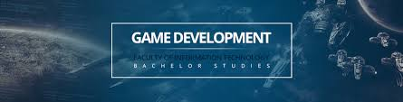
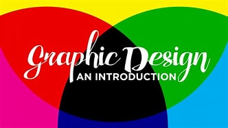

Web Development
Web Development that is best cummity of msp,
I wnat to work in this field,this filed is very important.
one of the efficiently in the world,In a few words,
web development involves the creation and maintenance of websites.
By “website,” we mean a collection of web pages that are
publicly accessible on the internet.

Game Development
Game Development can be undertaken by
a large Game Development Studio or by a single individual.
It can be as small or large as you like. As long as it lets
the player interact with content and is able to manipulate the game’s elements,
you can call it a ‘game’.A game developer could be a programmer,
a sound designer, an artist, a designer or many other roles available in the industry.

Graphic Design
Graphic design is a craft where professionals create visual content
to communicate messages. By applying visual hierarchy
and page layout techniques, designers use typography and pictures
to meet users’ specific needs and focus on the logic of displaying elements
in interactive designs, to optimize the user experience.